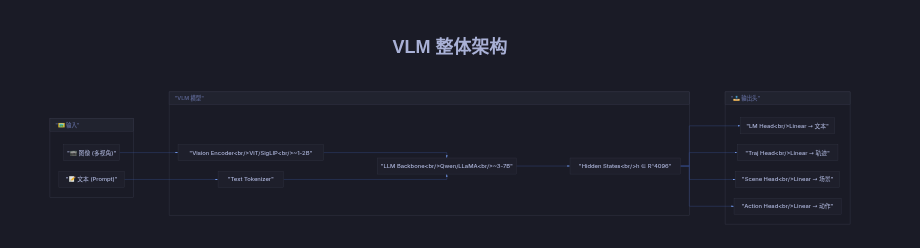
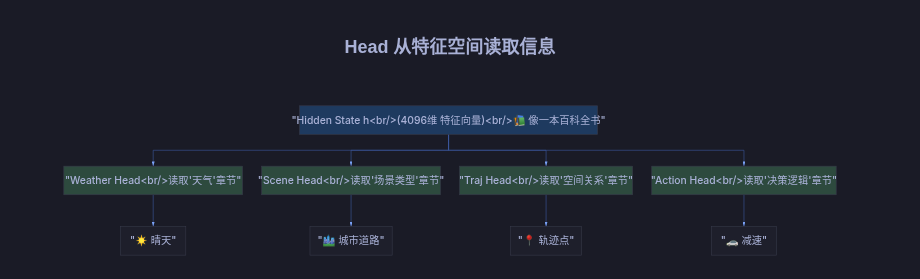
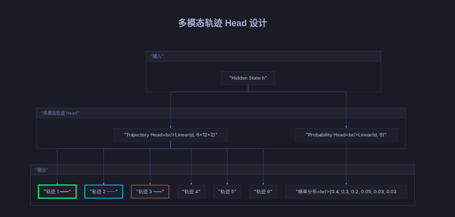

← 返回 Paper Hub
🧩 VLM 模型结构详解
Backbone、Head、Multi-Head 的作用与原理
1. VLM 整体架构

VLM 由 Vision Encoder + LLM Backbone + 多个 Head 组成 (点击放大)
| 组件 |
作用 |
参数量 |
输出 |
| Vision Encoder |
图像 → 特征向量 |
~1-2B |
(B, num_patches, d) |
| LLM Backbone |
融合视觉+文本，提取高级语义 |
~3-7B |
(B, seq_len, d) |
| Head |
特定任务的"翻译器" |
~几 MB |
任务相关输出 |
2. 为什么 Head 可以单独训练？
核心原理：Backbone 是"特征提取器"，Head 是"任务适配器"

每个 Head 从同一个 h 中读取不同方面的信息
类比理解
- Backbone = 大脑的理解能力（看懂了场景）
- Head = 不同的输出接口（嘴巴说话、手写字、脚走路）
训练 Head = 学习如何把"理解"翻译成特定格式的输出，不需要重新训练"理解能力"本身
3. Head 学到的特征是随机的吗？
不是随机的！ Head 学到的是从 h 到目标的确定性映射。
// Head 本质是线性层
class TrajectoryHead:
self.linear = Linear(hidden_dim, num_waypoints * 2)
def forward(h):
// h @ W^T + b
// W 学习的是：h 的哪些维度对应轨迹的 x, y
return self.linear(h)
// 训练后 W 的含义：
W[0, :] = 读取 h 中与 "第1个点的 x 坐标" 相关的特征组合
W[1, :] = 读取 h 中与 "第1个点的 y 坐标" 相关的特征组合
...
4. 轨迹 Head 可以做 Multi-Head 吗？
完全可以！而且很常见

多模态轨迹：输出多条候选轨迹 + 每条的概率
方案 A: 多模态轨迹 (最常用)
class MultiModalTrajectoryHead:
// 输出 6 条候选轨迹 + 每条的概率
self.traj_head = Linear(hidden_dim, 6 * 12 * 2) // 6条×12点×xy
self.prob_head = Linear(hidden_dim, 6)
def forward(h):
trajs = self.traj_head(h).reshape(-1, 6, 12, 2)
probs = softmax(self.prob_head(h))
return trajs, probs
方案 B: Query-based (DETR 风格)
class QueryBasedTrajectoryHead:
// 可学习的 query，每个负责预测一个 waypoint
self.queries = Parameter(randn(12, hidden_dim))
def forward(h):
decoded = transformer_decoder(self.queries, h) // (12, d)
waypoints = self.output(decoded) // (12, 2)
return waypoints
5. 完整代码示例
class DrivingVLM(nn.Module):
def __init__(self):
# Backbone (冻结或微调)
self.vision_encoder = SigLIP()
self.llm = Qwen2_7B()
# 多个 Head (可独立训练)
hidden_dim = 4096
self.weather_head = Linear(hidden_dim, 5) # 5类天气
self.scene_head = Linear(hidden_dim, 10) # 10类场景
self.action_head = Linear(hidden_dim, 17) # 17类动作
self.traj_head = MultiModalTrajectoryHead(hidden_dim)
def forward(self, images):
vis_tokens = self.vision_encoder(images)
h = self.llm(vis_tokens)
cls = h[:, 0, :] # 用第一个 token
return {
'weather': self.weather_head(cls),
'scene': self.scene_head(cls),
'action': self.action_head(cls),
'trajectories': self.traj_head(cls),
}
6. 总结
| 问题 |
答案 |
| Backbone 是什么？ |
特征提取器，理解图像+文本，输出高维语义向量 h |
| Head 是什么？ |
任务适配器，从 h 中提取特定任务需要的信息 |
| 为什么能单独训练？ |
h 已包含丰富语义，Head 只需学习"读取方式" |
| 特征是随机的吗？ |
不是，每个 Head 学到的是 h → 目标的确定性映射 |
| 轨迹能 Multi-Head？ |
能！多模态轨迹 / Query-based / Multi-Head Attention |
Last updated: 2026-02-28